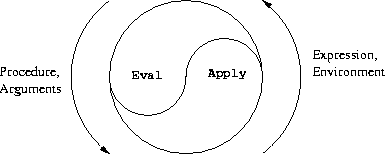

(+ 1 2) (define (fac n) (if (= n 0) 1 (* n (fac (- n 1)))))
(map (λ (x) (* x x)) '(1 2 3)) ; (1 4 9)
(let ([x 1] [y 2]) (+ x y))
first, rest, cons, empty, empty?
(define (sum lst)
(if (empty? lst)
0
(+ (first lst) (sum (rest lst)))))
(define circles (map circle '(10 20 30))) ; A list(c1 c2 c3)(apply hc-append circles) ; Same as calling(hc-append c1 c2 c3)
(define expr '(+ 3 4)) ; expr is a list of three items
(eval expr) ; Evaluates expression in list—result is 7
(define (fac n) (apply * (range 1 n))) (define (fac n) (eval (cons '* (range 1 n))))
Here range is
(define (range from to)
(if (> from to) empty
(cons from (range (+ from 1) to))))
eval in Schemeeval can evaluate itselfAbelson and Sussman, Structure and Interpretation of Computer Programs, MIT Press, 1993. Free book at http://mitpress.mit.edu/sicp

eval and apply call each other(eval exp env)
(apply proc args)
(define (eval exp env) ; env contains bindings of names to values
(cond ((self-evaluating? exp) exp)
((variable? exp) (lookup-variable-value exp env))
((quoted? exp) (text-of-quotation exp))
((assignment? exp) (eval-assignment exp env))
((definition? exp) (eval-definition exp env))
((if? exp) (eval-if exp env))
((lambda? exp)
(make-procedure (lambda-parameters exp)
(lambda-body exp)
env))
((begin? exp)
(eval-sequence (begin-actions exp) env))
((cond? exp) (eval (cond->if exp) env))
((application? exp)
(apply (eval (operator exp) env)
(list-of-values (operands exp) env)))
(else
(error "Unknown expression type -- EVAL" exp))))
(define (apply procedure arguments)
(cond ((primitive-procedure? procedure)
(apply-primitive-procedure procedure arguments))
((compound-procedure? procedure)
(eval-sequence
(procedure-body procedure)
(extend-environment
(procedure-parameters procedure)
arguments
(procedure-environment procedure))))
(else
(error
"Unknown procedure type -- APPLY" procedure))))
It is not possible to write a program that checks whether a program will terminate on all inputs
(halt-checker '(lambda (x) expr)) in Scheme
#t if (expr x) halts for all xk)
(lambda (x) (if (halt-checker x) (letrec ([loop (lambda () (loop))]) (loop)) #t))
(k k)? while statement(while (> x 0) do (print x) (newline) (set! x (- x 1)))
(while-do (λ () (> x 0)) (λ () (print x) (newline) (set! x (- x 1))))
(define-syntax while ...)
(define-syntax swap!
(syntax-rules () ; No keywords—we'll see those later
(
(swap! a b) ; Match this pattern
(let ((c a)) ; Replace with this code
(set! a b)
(set! b c))
)
; Other (pattern, code) pairs can come here, e.g. (swap! a b c)
)))
(define u 1) (define v 2) (swap! u v) ; Nowuis 2,vis 1
(swap! x c)(define-syntax while
(syntax-rules (do) ; do is a keyword
((while condition do body ...) ; body is a sequence of terms
(letrec ([loop (lambda ()
(if condition
(let ()
body ...
(loop))
#f))]) (loop)))))
(define-syntax reverse
(syntax-rules ()
; First case terminates recursion
((reverse e) (list e)) ; or (cons e nil)—(e) would try to evaluate e
; Second case invokes macro recursively
((reverse e es ...) (append (reverse es ...) (list e)))))
(reverse 1 2 3 4) ; yields '(4 3 2 1)
let* and others as macrosIn this step, we will write Scheme code that reads and writes Scheme expressions such as the following:
(define poly '(lambda (x) (+ (* x x) (* x 2) 10))) ; Note the quote
poly is set?* has only two arguments, and that the expression contains only + and * as operators.
Write a helper function (deriv expr var) that computes the derivative with respect to the given variable. For example,
(deriv '(+ (* t t) (* t 2)) 't)
; yields '(+ (+ (* 1 t) (* t 1)) (+ (* 1 2) (* t 0))) ; maybe in a different order
What is the code of your helper function?
derivative, so that
(derivative poly)
is a list of the form (lambda (var) ...)
What is the code of your function?
range from the slides and map)
What expression do you use?
for LoopIn this step, we want to make a macro for a Java-style loop over the elements of a list, like this:
(for i in '(1 2 3 4 5) do (print i) (newline))
map)
Write down the exact code you want to generate for this example.
i in the for statement was not declared previously, and that's how we like it. Where does it get defined? (Hint: Look at the lambda that the map gets.)for statement above? Is there something you can/should do to improve that? do optional?